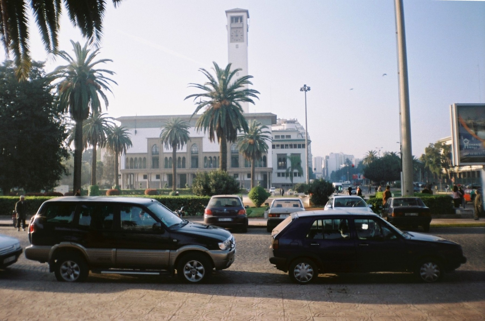

Casablanca mosque visits
Casablanca mosque visitsTours & Experiences
Private tours, mosque visits, cultural day trips, and transport from Casablanca.
Choose a Morocco Coco Travel product or contact us for a flexible private route across Casablanca, Rabat, and Morocco.
Casablanca mosque visits Rabat cultural day trip
Rabat cultural day trip
Private tours and transportFinding matching Morocco tours...
Private day tripRabat Day Trip from Casablanca with Licensed Guide
Discover Morocco's capital with Hassan Tower, the Mausoleum of Mohammed V, the Kasbah of the Udayas, Andalusian Gardens, and Bouregreg views.
Licensed guidePrivate excursionComfortable pace
Request priceView tour
Ticket includedCasablanca Hassan II Mosque Premium Tour with Entry Ticket
Explore the iconic Hassan II Mosque with a licensed guide and included entry ticket. Learn about Moroccan architecture, history, and Islamic culture.
Entry ticket includedLicensed guideFirst-time visitors
Entry includedView tour
Skip-the-lineCasablanca Hassan II Mosque Guided Tour with Skip-the-Line Entry
Direct mosque entry, licensed local guide, guided interior visit, pickup option, and La Corniche oceanfront photo stop.
Private tourMax 10 travelersInstant confirmation
From EUR 35View tour
No tours match those filters. Clear filters or contact Morocco Coco Travel for a custom private tour or transport request.
Need private transport?